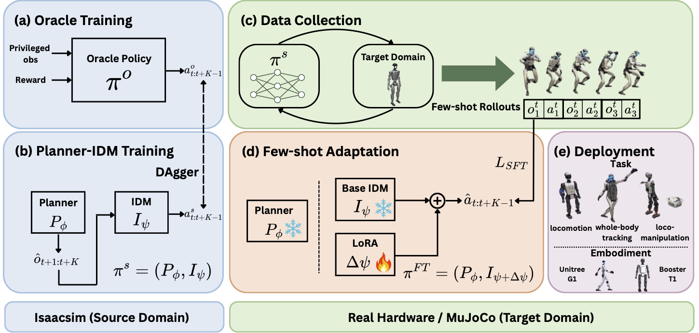
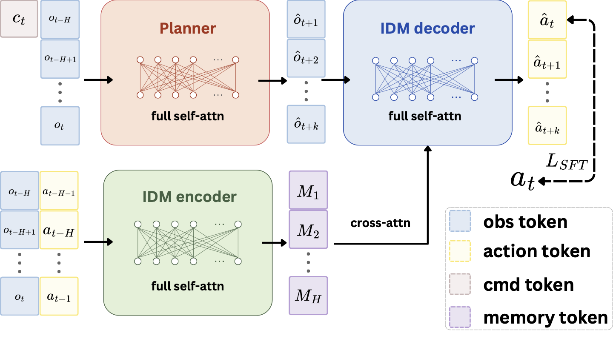

High-precision humanoid control is sensitive to target-domain dynamics shifts such as terrain changes, payloads, and actuator response mismatch. FADA addresses this setting with a Planner-Inverse Dynamics Model policy that separates task intent from action realization. A privileged oracle is first distilled into a deployable Planner-IDM student in simulation. At deployment, the planner is frozen and only the IDM is adapted with LoRA using a small set of target-domain observation-action rollouts. This aligns the action-generation module with the target dynamics while preserving the source-trained task interface. Across humanoid hardware and sim-to-sim experiments, the same adaptation principle improves deployment under locomotion, whole-body tracking, payload, and terrain shifts without requiring target rewards, privileged labels, simulator refitting, or full-policy finetuning.
FADA uses the same task command semantics before and after transfer, but adapts how the intended motion is converted into actions under the target dynamics.

Train a privileged oracle policy in the source simulator using task rewards and privileged state.
Distill the oracle into a deployable student that predicts proprioceptive intent and actions.
Collect short target-domain rollouts using only observations, commands, and executed actions.
Freeze the planner and adapt only LoRA parameters in the IDM with supervised action prediction.
The planner predicts a short-horizon proprioceptive future from command and observation history. The IDM maps that future together with recent execution history to an action chunk, while deployment executes only the first action in a receding-horizon loop.

FADA is evaluated on Unitree G1 and Booster T1 under target dynamics shifts induced by terrain, payloads, contact, and whole-body motion tracking demands.
The hardware and sim-to-sim trends support the same conclusion: target rollouts are most useful when they adapt the action-generation module rather than a monolithic policy or future-prediction objective.
Average success increases from FADA-zs to adapted FADA on completion-style hardware tasks.
Adapted FADA reduces normalized hardware tracking errors relative to the FADA-zs policy.
Across five sim-to-sim transfer tasks, FADA reduces normalized error relative to FADA-zs.
FADA adapts from ordinary target-domain rollouts collected by executing the source-trained policy. The supervision consists of paired proprioceptive observations and executed actions from the same rollout windows; no reward, labeling, privileged state, or off-policy dataset is required.